Frogville Fest je nastao nakon humanitarnog koncerta za Dejana Jankovića, koji je organizovan u junu 2010. godine, u dvorištu Narodne biblioteke ,,Veljko Petrović” u Žablju.
Grupa prijatelja i entuzijasta iz Opštine Žabalj se okupila sa zajedničkim ciljem da pomognu Dejanu i njegovoj porodici u prikupljanju sredstava koji su bili potrebni za njegovo lečenje.
Ideja da se uz pomoć muzike i energije mladih iz Žablja, Đurđeva,Gospođinaca i Čuruga - pomogne Dejanu tokom njegove borbe sa bolešću, uskoro je prerasla ideju o ozbiljnoj omladinskoj organizaciji, ali i u jedan od većih događaja u
Opštini Žabalj ...ostatak teksta
2012
Ovo je prva godina u kojoj je ideja Frogville Fest-a dobila svoje ime, formu i identitet.
Sa minimalnim sredstvima organizovan je koncert na Malom stadionu u Žablju a usled nedostatka prave bine, poslužili smo se kamionskom prikolicom na koju su bili postavljeni instrumenti rasveta i bendovi.
I pored toga što je realizacija bila na mnogo nižem nivou nego danas, taj kamion je bio slika i prilika naše rešenosti da stvorimo nešto i pored oskudnih sredstava.
Na festivalu je bilo oko 400 ljudi a nastupili su bendovi Fistfull of Rage (Rage Against The Machine tribute band), Gernika i Wolfram iz Novog Sada, mladi žabaljski rapcore bend BD fuse a na afterpartiju su nastupili Netics d'n'b, takođe iz Novog Sada.
Ovo je dogadjaj na kome smo poručili ljudima da možemo da uradimo stvari ako svi budemo udruženi oko jedne ideje i da je pred nama velika stvar u koju ćemo tek da uložimo trud, rad i sebe i da od Frogvilla napravimo instituciju.
2013
Drugi Frogville Fest je bio bolje organizovan nego prethodni, od ozvučenja do posećenosti koncerta.
Ni ove godine nije bilo dovoljno sredstava, pa je umesto kamionske prikolice ulogu bine odigrao bokserski ring Bokserskog kluba "Šajkaši" iz Žablja.
Na festivalu su nastupili bendovi Bao Vau, SNB, Wolfram, BDfuse, Downstroy, Piknik, Ten miles, Krug i Netics.
Kao specijalni gosti nastupao je bend Tetrapank. Polako je osvojeno poverenje lokalne zajednice, pa je i posećenost bila veća a atmosfera veoma zagrejana.
2014
Ovo je godina u kojoj je Frogville festival počeo da dobija ozbiljniju formu, prvi put je angažovana ozbiljnija produkcija koncerta, prvi put su se na bini našla veća imena sa regionalne muzičke scene, organizacija NPC iz Novog Sada je pozvana da oslika grafit na ulazu u festivalski prostor, interesovanje je bilo veće i ipored toga što je došlo do tehničkih problema u toku knocerta, ceo dogadjaj je odlično propraćen u poprilično zagrejanoj atmosferi.
Kao headliner festivala nastupili su Bjesovi i Zbogom Brus Li, zatim Minjah crew iz Novog Sada, mlade nade Za Dž iz Čačka čiji je nasup ostavio veliki utisak na lokalnu publiku, bendovi Wolfram i Netics iz Novog Sada i lokalne snage The Bulrush Hicks, Novi Momenti i BD fuse.
- 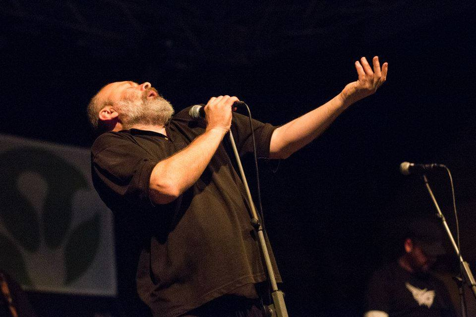
- 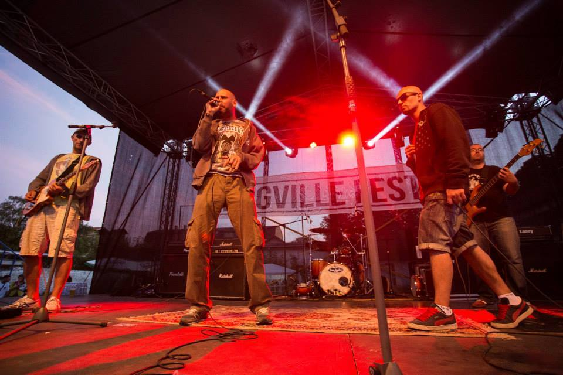
- 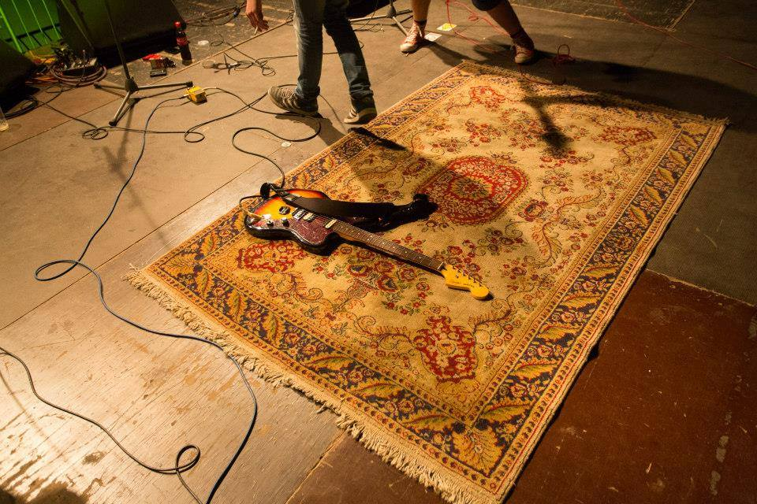
- 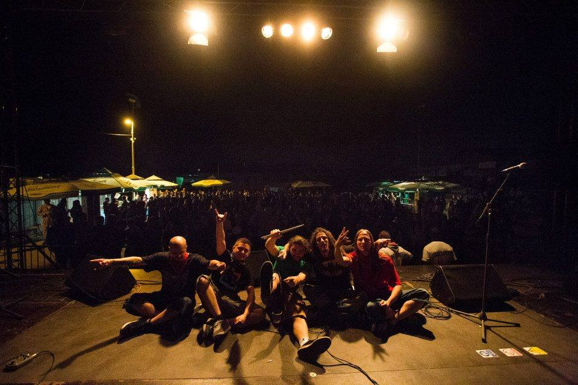
- 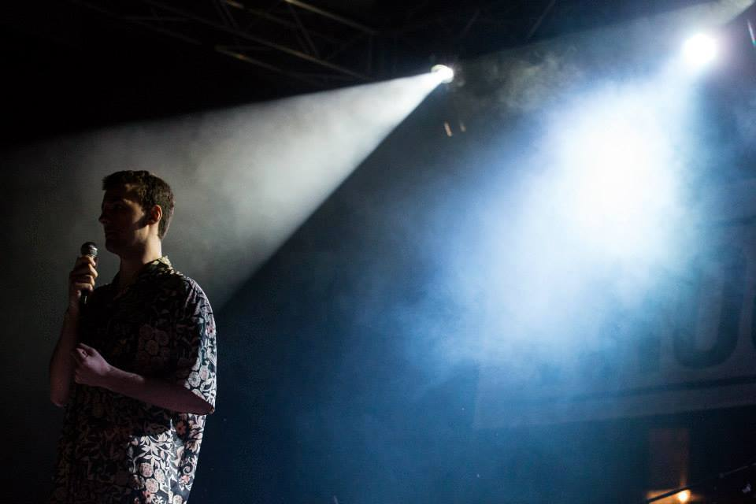
.jpg)
.jpg)
.jpg)
.jpg)
.jpg)
.jpg)
2015
Poslednji Frogville Fest je bio ono šta smo sve vreme pokušavali da stvorimo. Organizacija je bila najbolja do sada, prvi put je ostvarena saradnja sa studiom "Berar" iz Novog Sada pa je produkcija koncerta bila na nivou ozbiljnih muzičkih festivala, prvi put su festival oplemenila dva događaja pored samog koncerta, edukativna tribina pod sloganom "UKLJUČI SE!" i sa temom "Omladinski aktivizam i inicijativa kao načini uključenosti u zajednicu" i otvorena muzička radionica za bas gitaru, gitaru i bubnjeve, na kojoj su predavači iz "Kulturnog skloništa" iz Novog Sada predstavili ova tri instrumenta, tehnike sviranja, metode učenja i otkrivanja i izražavanja sebe kroz muziku.
Na koncertu su nastupili veterani pank scene Atheist Rap, mladi crnogorski hiphoperi Who See, beogradski Sharks, Snakes and Planes, novosadski psychedelic/stoner trojac Velar, Rammstein tribute band, novosadska Uvertira, a dj Faxcool iz Kruševca je publici priredio dva sata neponovljive d'n'b/jungle žurke kakvu Žabalj nikada nije video.
Na četvrtom izdanju Frogville Festa se pokazalo koliko je organizacioni tim Frogvilla napredovao za samo četiri godine i za kakve je sve poduhvate sposoban. Pred nama su jasan put i jasni ciljevi i nastojaćemo da progresivnim rastom proširimo organizaciju i uradimo velike stvari za Žabalj i muzičku scenu Srbije..
- 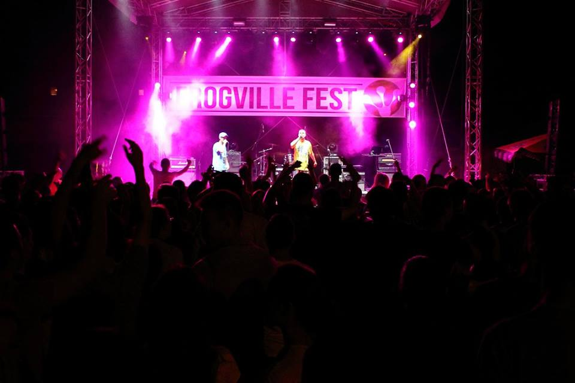

- 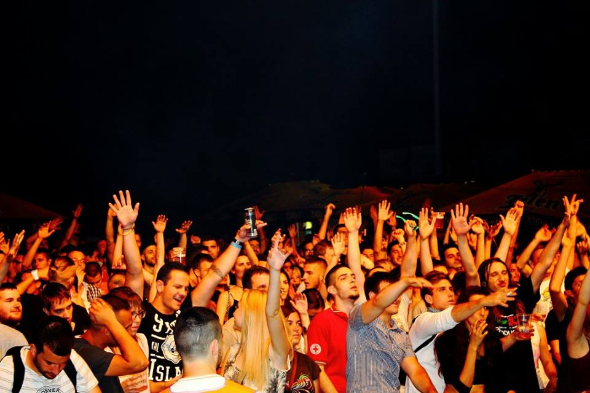

- 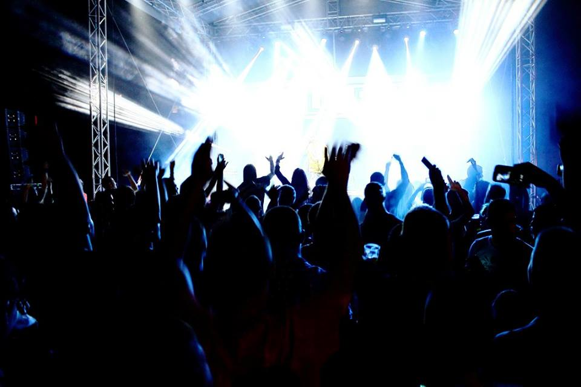
- 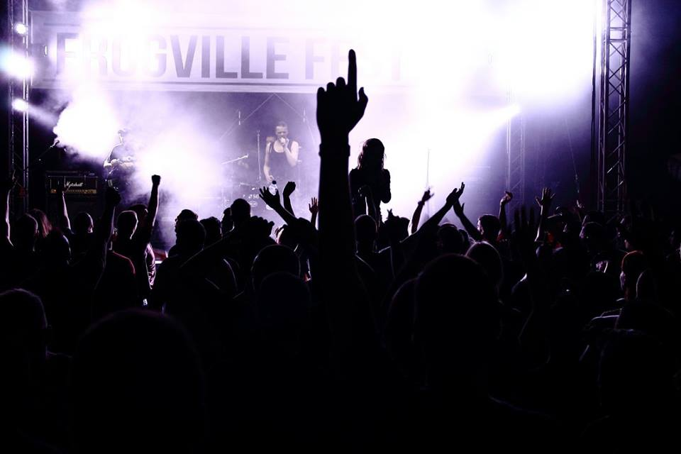
- 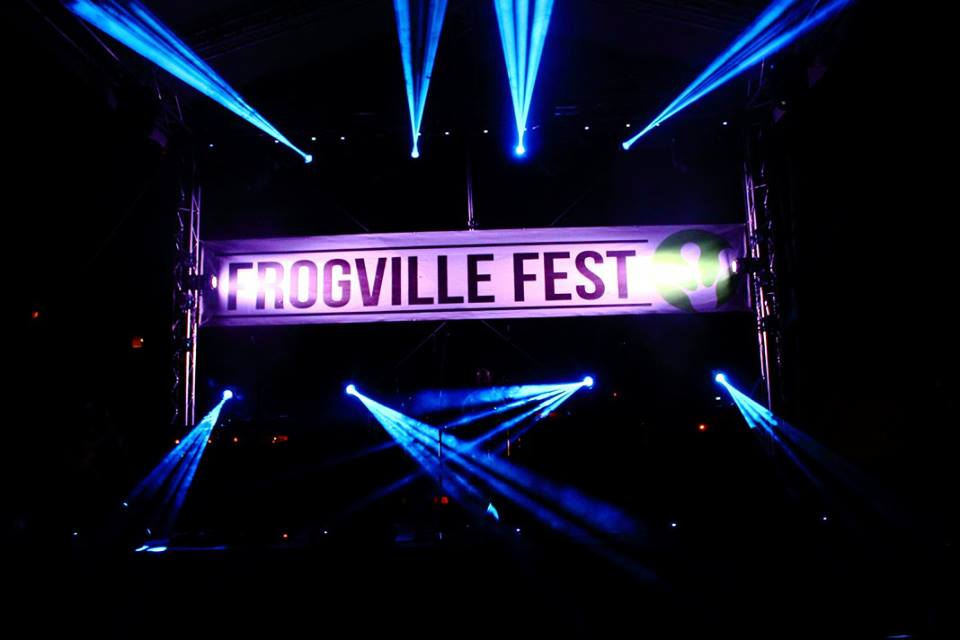

- 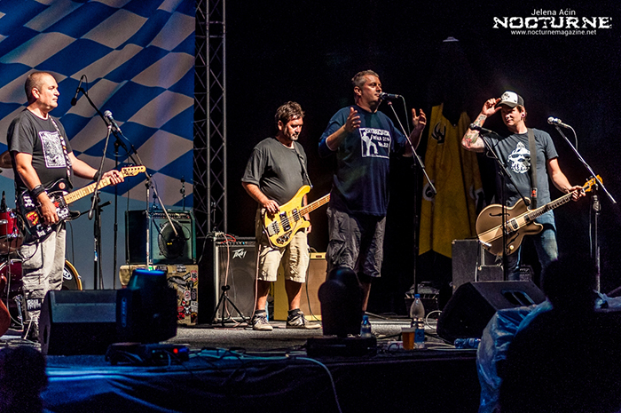